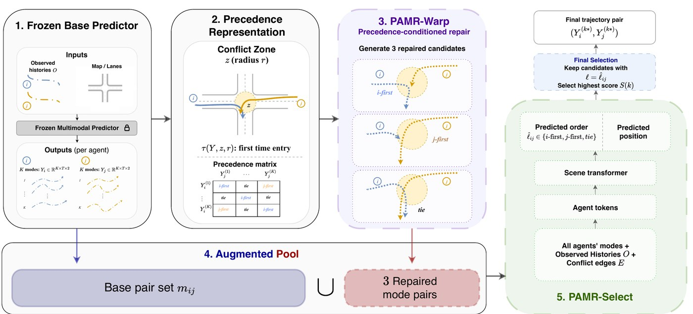

PAMR: Precedence-Aware Mode Repair for Multimodal Trajectory Forecasting
IEEE/CVF Winter Conference on Applications of Computer Vision (WACV), 2027 Accepted
Abstract
Multimodal trajectory forecasting models generate multiple future hypotheses and are typically evaluated through geometric displacement or endpoint errors. In interactive driving, however, an important source of uncertainty is ordinal: which agent enters a shared conflict zone first. We formalize this uncertainty as a precedence relation over agent–zone entry events and introduce three diagnostics that make it measurable: precedence coverage, order-collapse rate, and bad-winner selection. Across four widely used datasets and multiple forecasting model families, we find that learned K-mode predictors fail in all three aspects. First, they often fail to include the ground-truth precedence relation among their predicted modes. Second, their modes frequently collapse to redundant interaction orders despite being geometrically diverse. Third, even when a correct-order mode is present, the selected mode can still realize the wrong precedence. We propose PAMR, a Precedence-Aware Mode Repair pipeline that operates post-hoc on frozen multimodal predictors. PAMR has two stages. PAMR-Warp re-times base modes via a monotonic time-warp to generate precedence-targeted candidates. PAMR-Select then estimates the precedence from agent context and selects an order-consistent mode from the augmented pool of base and refined candidates. Across all four datasets, PAMR improves precedence coverage, lowers order-collapse rate, and reduces bad-winner selection while preserving geometric accuracy.